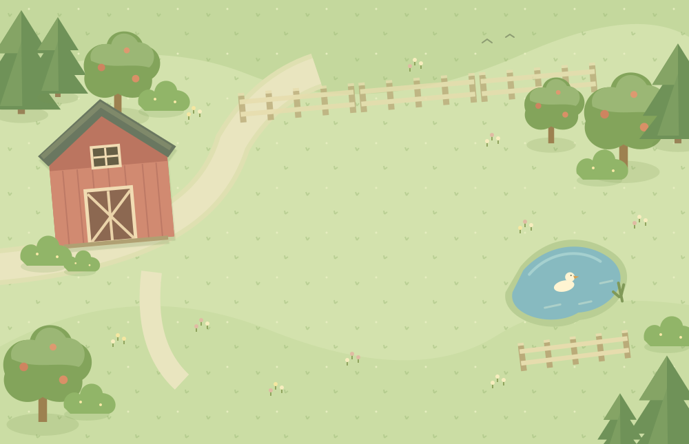

A LITTLE DIRT. A LOT OF JOY.
Life’s sweeter on the farm.
Plant something good. Watch a little happiness grow.
A lovely dayAlways a good time to grow

GROWN WITH A LITTLE LOVE
little acre est. today ♡
✦ A slower pace. A happier place.
A LITTLE
elbow grease
elbow grease
Pick a seed, then click
an empty patch.
an empty patch.
✓ Your farm is saved automatically